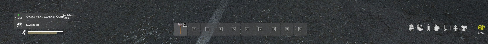
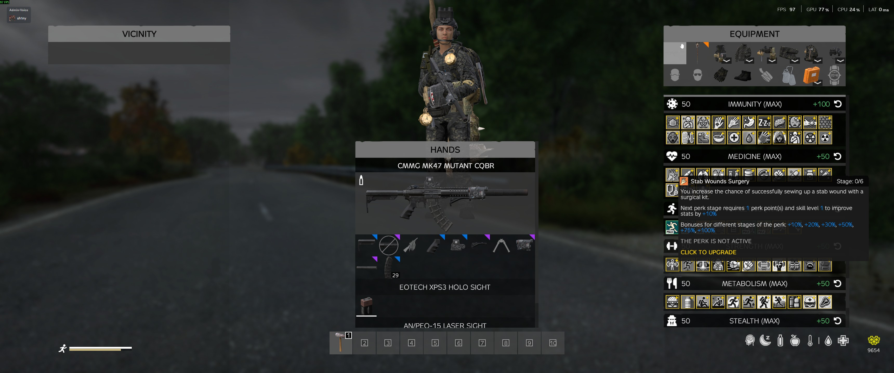

Survival Systems¶
Surviving on DeerIsle requires more than just a loaded gun. You must manage your physical condition, treat complex injuries, and navigate hazardous environments.
Table of Contents¶
- Advanced Stamina
- Character Skills
- Advanced Medicine
- Medicines Overview
- Vaccines
- Disinfection
- Hematomas
- Gunshot & Stab Wounds
- Concussion
- Cold / Pneumonia
- Food Poisoning
- Chemical Poisoning
- Zombie Virus
- Sepsis
- Rabies
- Pain
- Overdose
- Sleep
- Mental Health
- Radiation Zones
Advanced Stamina¶
Survivatorium features a realistic stamina system that forces you to think carefully about your loadout and your route.

Two Stamina Bars (Important)¶
- White bar: Short-burst vanilla stamina for immediate actions.
- Yellow bar: Inedia general stamina (long-term endurance).
On this server, Inedia stamina is active, while Inedia's own sleep stamina is disabled. Your sleep/fatigue gameplay comes from the Terje medicine system instead.
Weight Matters¶
The more gear you carry, the slower you will move and the faster your stamina will drain. - Light Load: Optimal for long-distance travel and combat mobility. - Heavy Load: You will experience noticeable slowdowns, especially once you move into very high carry weight. - Overloaded: The harsh movement penalties begin much later than vanilla-style hardcore setups, but if you push too far you can still be forced into walking and eventually movement lock.
Terrain & Slopes¶
Your environment directly impacts your energy levels: - Surfaces: Running on paved roads is highly efficient. Running through tall grass, deep snow, or wading through water will exhaust you quickly. - Slopes: Sprinting up a steep hill will drain your stamina in seconds. Plan your routes to avoid steep inclines if you are heavily geared.
How This Server Is Tuned¶
- More forgiving than default Inedia: Sprint/jog drain is reduced compared to stock wiki values, so players can stay active longer in PvP and movement-heavy fights.
- Low/Critical thresholds: Debuffs begin at roughly low yellow stamina, and become severe at critical yellow stamina.
- Heat still matters: Overheating increases stamina consumption, so temperature management is still part of movement planning.
Energy Drinks¶
Keep an eye out for energy drinks (like MadBull or Pipsi). Consuming them will give you a temporary boost to your stamina recovery, which can be a lifesaver during a long trek or a firefight.
Essential Survival Tools¶
The Metro Watch¶
A true survivor needs to keep track of time and their environment. The Metro Watch is a highly sought-after piece of gear that provides crucial information at a glance. - Time & Date: Keep track of daylight hours so you aren't caught out in the dark. - Environmental Data: Some models can help you monitor your surroundings, making it an invaluable tool for navigating the harsh weather of DeerIsle.
Character Skills¶
As you survive and perform actions in the world, your character will learn and grow.

Skill Progression¶
You gain experience simply by playing the game. - Athletics & Strength: Running, jumping, and carrying gear will slowly improve your physical capabilities. - Metabolism & Immunity: Eating, drinking, and fighting off diseases will make your body more resilient. - Survival & Hunting: Starting fires, skinning animals, and fishing will make you a master of the wilderness. - Medicine: Treating wounds and using medical supplies will make your treatments more effective.
Perks & Skill Books¶
As you level up your skills, you will unlock powerful perks that grant permanent bonuses, such as reduced weapon sway, better disease resistance, or the ability to carry more weight. You can also find Skill Books scattered across the world. Reading these will grant you a burst of experience in a specific skill tree.
Note: Your skills are persistent. You do not lose your hard-earned experience when you die!
Advanced Medicine¶
A simple bandage won't save you here. The medical system on this server is deep and realistic — every illness and injury progresses through distinct stages, each requiring a specific treatment. Learn this system or die from something a basic first-aid kit could have fixed.
Medicines Overview¶
Medicines come in three forms:
- Tablets — Used for early-stage treatment and prevention. Packages hold multiple doses and can be stacked. Best for carrying multiples in your kit.
- Ampoules — Stronger medications for moderate to severe conditions. Require a syringe to administer. After each use, the syringe must be disinfected with alcohol or boiled in water before reuse.
- Injectors — Disposable single-use injectors. Similar to ampoules but no syringe needed — the injector is discarded after use.
Medicine tiers: Treatments come in Weak, Normal, and Strong variants. A higher-tier medicine can treat a lower-tier illness, but using a weaker medicine on an advanced illness will have no effect.
Vaccines¶
Vaccines grant temporary immunity to specific diseases. Administer them before entering contaminated or dangerous areas:
| Vaccine | Protects Against |
|---|---|
| Vaxicam | Cold / Pneumonia |
| Zerivax | Zombie Virus |
| Rabivax | Rabies |
Disinfection¶
Disinfection is critical. Always disinfect your hands and medical tools before performing any procedure. Dirty hands on an open wound will cause sepsis.
- Alcoholic Tincture and Disinfectant Spray can clean tools and wounds.
- Syringes must be disinfected after every use.
Physical Conditions¶
Hematomas¶
Caused by blunt trauma — zombie hits, fists, or bludgeoning weapons. When multiple hematomas accumulate, your health will begin to decline. They heal naturally over time, but ointments speed up recovery significantly.
Treatments: Viprosal, Capsicum, Finalgon ointments (Weak → Strong).
Gunshot & Stab Wounds¶
Bullets and blade wounds cause severe bleeding and may leave foreign objects in your body. Bandaging stops immediate bleeding but the wound will continue to seep until the object is surgically removed.
In severe cases, the wound penetrates internal organs — much harder to treat and requiring higher-quality surgical tools.
A ballistic vest can absorb bullet impacts, but even blocked shots transfer as hematomas rather than penetrating wounds.
Surgical Tools (Weak → Strong): Ceramic Surgical Bowl → Field Surgical Kit → IFAK → AFAK
⚠️ Always disinfect before surgery. Always suture the wound afterward.
Surgical Sutures¶
After surgery, sutures must be regularly disinfected to prevent sepsis. Check your wounds — infected sutures will deteriorate quickly and can become life-threatening.
Concussion¶
Caused by hard blows to the head, nearby explosions, or low-caliber bullets absorbed by a ballistic helmet. Symptoms include headache, dizziness, unstable movement, and blurred vision. Heals on its own over time, but medications significantly reduce severity and duration.
Treatments: Noopept (tablets) → Neirox (ampoule/injector).
Hemostasis (Bleeding Rate)¶
Your body's natural ability to slow bleeding. Specific medications can boost this process — critical when you are taking fire and can't stop to bandage properly.
Treatments: Vikasol (Weak) → Erytromixelin injector (Strong).
Blood Regeneration¶
Your body regenerates blood after blood loss. Medications can accelerate this process, helping you recover faster after wounds.
Treatments: Irovit / Magnesium Sulfate (tablets, Weak) → Erythropoetin (ampoule) → Erytromixelin injector (Strong).
Infections & Diseases¶
Cold / Pneumonia¶
Contracted from prolonged cold exposure. A mild cold can be cured by resting somewhere warm. Untreated, it progresses to pneumonia — which will slowly drain your health and requires antibiotics.
Treat early. Weak antibiotics like Tetracycline work on a mild cold. Pneumonia requires Normal or Strong antibiotics (Ibuprofen, Amoxiclav, Imipenem, etc.). Vaccination with Vaxicam prevents infection.
Food Poisoning¶
From spoiled food, raw meat, rotten fruit, poisonous mushrooms, or dirty water. Symptoms (nausea, vomiting) appear quickly. Untreated, it causes dehydration and health loss.
Treatments: Charcoal Tablets / Polysorb (Weak) → Mesalazine / Metoclopramid (Normal) → Heptral / Stomaproxidal (Strong).
Chemical Poisoning¶
From inhaling toxic gas in contaminated areas. Starts with coughing, escalates to nausea and severe health loss. Fatal without treatment.
Treatments: Rombiopental (Weak) → Neurocetal ampoule (Normal) → AntiChem Injector (Strong).
Zombie Virus¶
Transmitted through airborne contact and zombie wounds — any hit from an infected carries a chance of transmission. Wearing a face mask and ballistic armor reduces the risk. The virus has a long incubation period before health decline begins, giving you time to find a cure.
Treatment: Zivirol (ampoule or injector) — acts as the antidote. Vaccination: Zerivax prevents infection.
⚠️ This is one of the most dangerous diseases. Always carry Zivirol in high-zombie areas.
Sepsis¶
Infection from dirty wounds — caused by handling wounds without disinfecting hands, or using unsterilised tools. Gradually deteriorates health without treatment.
Treatment requires Strong antibiotics only: Flemoclav / Imipenem (ampoule) or Amoxiclav / Topoisomerase (injector).
Rabies¶
Transmitted by bites from infected animals (wolves). Progresses silently — early stage shows only mild weakness. Stage 2 causes severe nausea, preventing eating or drinking. Stage 3 causes rapid health loss and is fatal without treatment.
Treatments: Rabinoline (Normal ampoule) → Rifampicin / Rabinucoline (Strong). Vaccination: Rabivax prevents infection.
Symptoms¶
Pain¶
All significant injuries cause pain, which impairs movement and combat. Pain fades naturally over time but can be suppressed with painkillers.
Treatments (Weak → Strong): Codeine / Analgin / Ibuprofen (tablets) → Novacaine (ampoule) → Morphine / Hexobarbital / Promidol (injectors).
⚠️ Be careful with strong painkillers — they carry a real overdose risk.
Overdose¶
Taking too much medication introduces overdose toxicity that builds over time. It progresses through three stages:
- Stage 1: Nausea and hallucinations.
- Stage 2: Loss of consciousness — you become completely vulnerable.
- Stage 3: Critical health loss, potentially fatal.
The toxicity clears naturally as your body processes it. Drinking water reduces overdose progression. Don't stack the same medicines repeatedly.
Emotional States¶
Sleep¶
Your character needs rest. The sleep indicator tracks fatigue:
- Yellow indicator: Your character starts yawning and vision degrades.
- Red indicator: Risk of losing consciousness from exhaustion.
Sleep works best in warm, safe places — near a fire, inside a building, or in a sleeping bag. You cannot sleep while freezing, starving, or suffering from a Stage 2+ illness. While asleep, health and blood recover rapidly, and you may naturally shake off mild illnesses.
Energy drinks (MadBull, Yaguar, Gang, etc.) can temporarily suppress the sleep need in an emergency.
Mental Health¶
Extreme stress degrades your mental state. Causes include:
- Prolonged exposure to Psionic Zones (dangerous psychoactive areas on the map).
- Repeated zombie attacks.
- Consuming human meat.
As mental health deteriorates, you experience panic, hallucinations, and loss of control. At zero mental health, your character may take uncontrollable actions that lead to death.
Treatments (Weak → Strong): Adepress / Agteminol / Venlafaxine (tablets) → Actaparoxetine / Metralindole (ampoule) → Amitriptyline / Amfitalicyne (Strong).
Wearing a PSI Helmet provides strong protection in Psionic Zones.
The advanced medicine system on this server uses the Terje Medicine mod. Skills and Radiation systems are covered in their own sections.
Radiation Zones¶
Certain high-value military areas and key locations on DeerIsle are highly irradiated. Entering these zones unprepared is a death sentence.
The Geiger Counter¶
Always carry a Geiger counter when exploring unknown territory. It will click and warn you when radiation levels are rising.
Protection¶
To survive in a radiation zone, you need specialized gear: - NBC Suits: A full NBC suit (hood, jacket, pants, boots, and gloves) combined with a gas mask and filter will protect you from environmental radiation. - Filters: Gas mask filters degrade over time while in a radiation zone. Always bring spares!
Treatment¶
If you absorb too much radiation, you will develop acute radiation sickness. This causes vomiting, blood loss, and eventually death. You must use specialized anti-radiation medication (like Rad-X or Potassium Iodide) to purge the radiation from your system.